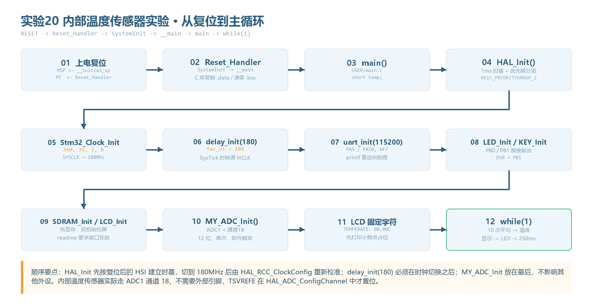
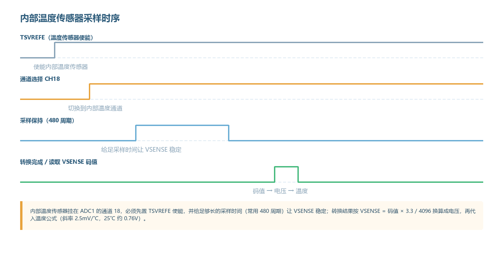
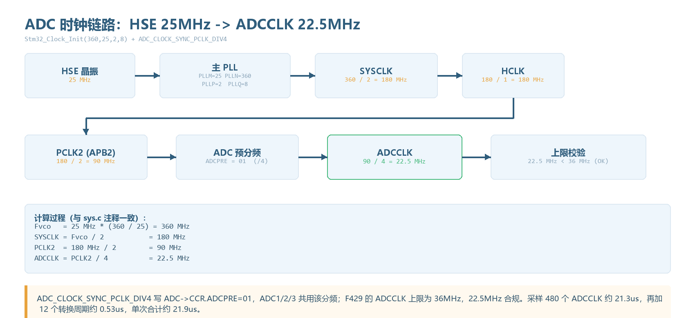
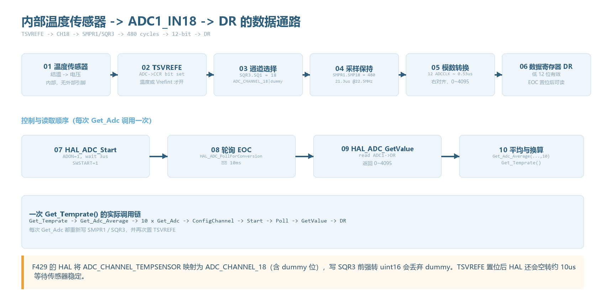
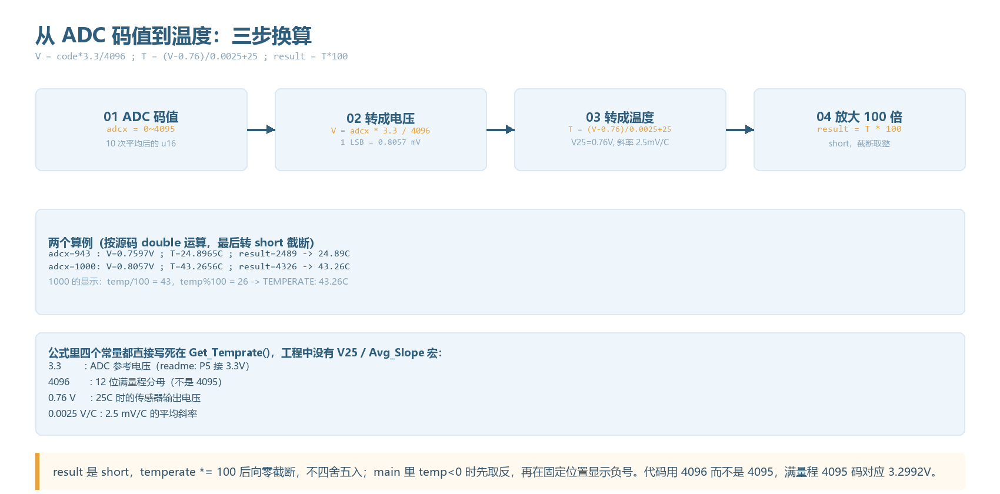
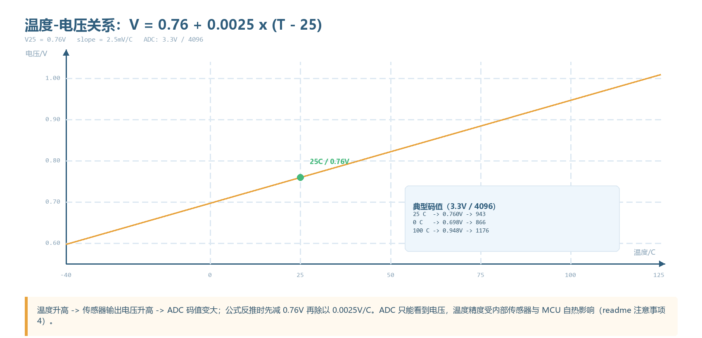

01 实验目标与硬件资源
本实验不接外部传感器，测量对象是 STM32F429 芯片内部的温度传感器。它输出一个随结温变化的模拟电压，接到 ADC1 的某个内部通道；CPU 先得到 0~4095 的 12 位码值，再按源码里的线性公式换算成温度，最后通过 LCD 显示，并让 DS0 每 250ms 翻转一次。
| 项目 | 工程中的事实 | 证据 |
|---|---|---|
| 测量对象 | STM32 内部温度传感器，连接到 ADC1 | readme.txt 第 11~12 行 |
| 通道号 | readme 写“ADC1_CH16”，adc.c 注释把通道范围写成 0~16；但 F429 的 HAL 宏实际映射为 ADC_CHANNEL_18 | readme 第 11~12 行；adc.c 第 23、58 行；stm32f4xx_hal_adc_ex.h 第 196~199 行；ITEMP.uvprojx 定义 STM32F429xx |
| 参考电压 | 3.3V（P5 默认连接 3.3V） | readme.txt 第 20 行；Get_Temprate 中的 3.3 |
| 分辨率 | 12 位，右对齐，码值 0~4095 | adc.c 第 28~29 行 |
| 采样时间 | 480 个 ADCCLK | adc.c 第 66 行 |
| 显示与指示 | LCD 显示 xx.xxC；DS0（PB1）250ms 翻转 | main.c 第 41~52 行 |
| 串口 | USART1，115200，PA9/PA10 | main.c 第 25 行；readme.txt 第 9 行 |
- 代码里没有直接写 16 或 18，而是写宏
ADC_CHANNEL_TEMPSENSOR；具体值由 HALLIB 头文件按芯片型号选择。 - 本工程编译宏是
STM32F429xx，对应头文件分支把温度传感器定义为ADC_CHANNEL_18 | 0x10000000，所以运行时的 SQR3 通道号是 18。 - readme 里的“通道 16”对应 F40x/F41x 系列，adc.c 的 0~16 注释也是旧范围；在 F429 上照抄 16 会采到错误通道，读数自然不对。
- 0x10000000 是 HAL 内部的“区分位”，用于把温度传感器与同通道的 VBAT 分开，不会写进寄存器。
- PA5 虽然在
HAL_ADC_MspInit里被配成模拟输入，但内部温度传感器不需要外部引脚，这段配置是本系列 ADC 例程共用的残留。
02 目录与文件分工
工程分为 USER、CORE、SYSTEM、HARDWARE、HALLIB 五层。温度采集的核心只有 HARDWARE/ADC/adc.c，其余目录分别负责启动、时钟、延时、串口、显示和外设底层。
| 文件 | 职责 | 本实验用到的关键内容 |
|---|---|---|
| USER/main.c | 主流程 | 初始化顺序、LCD 固定字符、while(1) 显示温度 |
| HARDWARE/ADC/adc.c | ADC 驱动 | MY_ADC_Init、Get_Adc、Get_Adc_Average、Get_Temprate、HAL_ADC_MspInit |
| HARDWARE/ADC/adc.h | 驱动声明 | ADC1_Handler 与四个函数原型 |
| HALLIB/.../stm32f4xx_hal_adc.c | ADC 通用驱动 | HAL_ADC_Init、HAL_ADC_ConfigChannel、HAL_ADC_Start、HAL_ADC_PollForConversion、HAL_ADC_GetValue |
| HALLIB/.../stm32f4xx_hal_adc_ex.h | 扩展通道定义 | ADC_CHANNEL_TEMPSENSOR 按型号映射为 16 或 18 |
| CORE/startup_stm32f429xx.s | 启动文件 | 栈/堆大小、向量表、Reset_Handler |
| USER/system_stm32f4xx.c | SystemInit | FPU、RCC 复位、VTOR |
| SYSTEM/sys/sys.c | 时钟 | Stm32_Clock_Init(360,25,2,8) |
| SYSTEM/delay/delay.c | 延时 | delay_init、delay_us、delay_ms（非 OS 分支） |
| SYSTEM/usart/usart.c | 串口 | uart_init、fputc 重定向、USART1 中断 |
| HARDWARE/SDRAM、LCD | 显示 | SDRAM_Init 初始化外部显存（RGB 屏），LCD_Init 初始化面板/接口 |
| HARDWARE/LED、KEY | 板上外设 | DS0=PB1；按键初始化 |
| USER/stm32f4xx_it.c | 异常/中断入口 | 只保留 NMI、HardFault、SysTick 等，SysTick 调用 HAL_IncTick |
stm32f4xx_it.c 中没有 ADC_IRQHandler，启动文件里对应项只是弱定义。ADC 的 EOC 由 HAL_ADC_PollForConversion 轮询。03 启动流程总览
下图把 main.c 的调用顺序与启动文件、系统初始化串在一起。编号 01~04 发生在 main() 之前或入口处，05~12 是 main 内部严格按源码顺序执行的初始化。


温度传感器挂在 ADC1 的通道 18，必须先置 TSVREFE 使能，并给足够长的采样时间（常用 480 周期）让 VSENSE 稳定。码值先按 3.3V/4096 换算成电压，再代入温度公式，斜率约 2.5mV/℃、25℃ 时约 0.76V。
main 函数全文
#include "sys.h" // 系统头文件：寄存器定义与基础类型 #include "delay.h" // 延时驱动：delay_init / delay_us / delay_ms #include "usart.h" // 串口驱动：uart_init 与 printf 重定向 #include "led.h" // LED 驱动：LED_Init、LED0/LED1 #include "key.h" // 按键驱动：KEY_Init #include "lcd.h" // LCD 驱动：LCD_Init、LCD_ShowString、LCD_ShowxNum #include "sdram.h" // SDRAM 驱动：外部显存初始化 #include "adc.h" // ADC 驱动：MY_ADC_Init、Get_Temprate int main(void) // 程序入口：先初始化外设，再进入温度采样循环 { short temp; // 温度值扩大 100 倍后放在 short 里 HAL_Init(); // 初始化 HAL：Flash 缓存、优先级分组、1ms 时基 Stm32_Clock_Init(360,25,2,8); // HSE 25MHz -> SYSCLK 180MHz delay_init(180); // 按 180MHz 计算 fac_us uart_init(115200); // USART1，PA9/PA10，printf 重定向 LED_Init(); // DS0=PB1、DS1=PB0 KEY_Init(); // 按键 GPIO SDRAM_Init(); // 外部 SDRAM（RGB 屏显存） LCD_Init(); // LCD 面板/接口初始化 MY_ADC_Init(); // ADC1：12 位、单次、软件触发 POINT_COLOR=RED; // 标题文字颜色设为红色 LCD_ShowString(30,50,200,16,16,"Apollo STM32F4/F7"); // 显示开发板型号标题 LCD_ShowString(30,70,200,16,16,"Temperature TEST"); // 显示实验名称 LCD_ShowString(30,90,200,16,16,"ATOM@ALIENTEK"); // 显示厂商信息 LCD_ShowString(30,110,200,16,16,"2016/1/13"); // 显示版本日期 POINT_COLOR=BLUE; // 以下温度值用蓝色 LCD_ShowString(30,140,200,16,16,"TEMPERATE: 00.00C"); // 先画小数点占位 while(1) // 主循环：反复采样并显示温度 { temp=Get_Temprate(); // 10 次平均 -> 码值 -> 温度 x100 if(temp<0) // 判断温度是否为负值 { temp=-temp; // 先转成正数，负号单独显示 LCD_ShowString(30+10*8,140,16,16,16,"-"); // 在符号位画负号 }else LCD_ShowString(30+10*8,140,16,16,16," "); // 温度非负时符号位留空 LCD_ShowxNum(30+11*8,140,temp/100,2,16,0); // 整数部分 LCD_ShowxNum(30+14*8,140,temp%100,2,16,0); // 两位小数 LED0=!LED0; // 每轮翻转 DS0 delay_ms(250); // 约 250ms 刷新一次 } // while(1) 循环体结束 } // main 函数结束
HAL_Init()必须最先：它建立 1ms SysTick 时基和中断优先级分组；后面的 HAL 延时、串口、ADC 轮询都依赖这个时基。Stm32_Clock_Init(360,25,2,8)把时钟从复位默认的 HSI 切到 HSE+PLL 的 180MHz；HAL_RCC_ClockConfig 内部会重新调用 HAL_InitTick，把 1ms 时基按新 HCLK 校准。delay_init(180)必须在时钟切换之后：它把fac_us设为 180，如果先执行，延时会按错误的主频计算。uart_init(115200)放在LCD_Init()之前，是 readme.txt 第 19 行的明确要求；不过在本版本lcd.c正文中没有检索到printf调用，仍按 readme 保留该顺序。SDRAM_Init()必须在LCD_Init()之前：RGB 屏的显存位于外部 SDRAM，显存没准备好就去初始化屏会花屏或白屏；MCU 屏自带 GRAM，但源码仍保留这个顺序。MY_ADC_Init()放在最后：它依赖 RCC 已配置好 ADC 时钟，且只操作 ADC1 和 GPIOA，不会影响前面已经初始化的外设。short temp保存的是“温度 ×100”的整数，例如 2543 表示 25.43C；这样 LCD 只显示整数，不需要浮点格式化。- 先显示
"TEMPERATE: 00.00C"是为了把小数点和 C 固定在屏上，后面只覆盖数字位，避免每轮重画整行造成闪烁。
04 启动文件与向量表
启动文件 CORE/startup_stm32f429xx.s 定义了栈、堆和中断向量表。复位时，Cortex-M4 从地址 0x00000000 取第一个字作为 MSP，第二个字作为 PC，因此向量表的前两项必须依次是 __initial_sp 和 Reset_Handler。
Stack_Size EQU 0x400; ; 栈 1KB AREA STACK, NOINIT, READWRITE, ALIGN=3 ; 定义栈段，未初始化，读写，8 字节对齐 Stack_Mem SPACE Stack_Size ; 分配 1KB 栈空间 __initial_sp ; 栈顶标号，向量表第一项 Heap_Size EQU 0x200; ; 堆 512B AREA HEAP, NOINIT, READWRITE, ALIGN=3 ; 定义堆段，未初始化，读写，8 字节对齐 __heap_base ; 堆起始地址标号 Heap_Mem SPACE Heap_Size ; 分配 512B 堆空间 __heap_limit ; 堆结束地址标号 AREA RESET, DATA, READONLY ; 定义只读数据段 RESET，存放向量表 EXPORT __Vectors ; 导出向量表符号供链接器使用 __Vectors DCD __initial_sp ; 第 1 个字：栈顶 DCD Reset_Handler ; 第 2 个字：复位入口 DCD NMI_Handler ; 第 3 个字：不可屏蔽中断入口 DCD HardFault_Handler ; 第 4 个字：硬错误中断入口 ; 省略：其余异常与外设中断向量，共 100 多项 Reset_Handler PROC ; 复位处理函数开始 EXPORT Reset_Handler [WEAK] ; 弱导出，允许用户重写 IMPORT SystemInit ; 引入 C 函数 SystemInit IMPORT __main ; 引入 C 库入口 __main LDR R0, =SystemInit ; 取 SystemInit 地址到 R0 BLX R0 ; 先执行 SystemInit LDR R0, =__main ; 取 __main 地址到 R0 BX R0 ; 再跳到 C 库入口 __main ENDP ; Reset_Handler 函数结束
- 栈只有 0x400 字节（1KB），堆 0x200 字节（512B）；本工程没有动态内存和递归深调用，够用，但加大局部数组时要重新评估。
SystemInit在__main之前执行，此时 .data/.bss 还没有初始化，所以 SystemInit 不能依赖任何全局变量。__main是 ARM C 库入口，负责把 .data 从 Flash 复制到 RAM、把 .bss 清零，然后才调用main()。ADC1_Handler是未显式初始化的全局变量，位于 .bss，进入 main 时所有成员都是 0，因此HAL_ADC_Init看到的状态是HAL_ADC_STATE_RESET，会正常调用HAL_ADC_MspInit。- 向量表默认映射在 Flash 起始地址；SystemInit 末尾把
SCB->VTOR设为FLASH_BASE | VECT_TAB_OFFSET，本工程偏移为 0。 - 启动文件里没有真正的 ADC 中断服务函数，只有弱定义；本实验也不开启 ADC 中断，所以不会进入
ADC_IRQHandler。
05 SystemInit 与 HAL_Init
SystemInit 位于 USER/system_stm32f4xx.c，由 Reset_Handler 调用。它只做 FPU 使能、RCC 复位到 HSI、向量表重定位，不配置 PLL。真正的 180MHz 时钟在 main 里的 Stm32_Clock_Init 完成。
void SystemInit(void) // 复位后最早执行的 C 函数，把芯片拉回默认状态 { /* FPU settings */ #if (__FPU_PRESENT == 1) && (__FPU_USED == 1) // 只有带 FPU 且启用时才编译 SCB->CPACR |= ((3UL << 10*2)|(3UL << 11*2)); // CP10/CP11 全访问 #endif // 结束 FPU 条件编译 /* Reset the RCC clock configuration to the default reset state */ RCC->CR |= (uint32_t)0x00000001; // 打开 HSION RCC->CFGR = 0x00000000; // 清空 CFGR RCC->CR &= (uint32_t)0xFEF6FFFF; // 关 HSEON/CSSON/PLLON RCC->PLLCFGR = 0x24003010; // PLLCFGR 复位值 RCC->CR &= (uint32_t)0xFFFBFFFF; // 清 HSEBYP RCC->CIR = 0x00000000; // 关闭所有 RCC 中断 // 省略：DATA_IN_ExtSRAM / DATA_IN_ExtSDRAM 条件编译分支 SCB->VTOR = FLASH_BASE | VECT_TAB_OFFSET; // 向量表放内部 Flash } // SystemInit 结束，此时主频仍为 HSI 16MHz
- 它把 RCC 恢复到复位默认值，HSI 打开、PLL 关闭，所以离开 SystemInit 时 SYSCLK=16MHz，不是 180MHz。
- FPU 的 CP10/CP11 在这里才被允许访问；没有这一步，后续浮点指令可能触发 UsageFault。
- RCC 复位期间不要依赖任何外设时钟；本工程在 main 里重新配置，属于“先复位、后重建”的稳妥做法。
SCB->VTOR必须在异常发生前设置；本工程偏移为 0，等价于默认映射，但显式写入更清晰。
HAL_Init 做了什么
HAL_StatusTypeDef HAL_Init(void) // HAL 库初始化入口，建立运行时基础环境 { // 省略：函数上方的条件编译与逐段注释 __HAL_FLASH_INSTRUCTION_CACHE_ENABLE(); // 指令缓存 __HAL_FLASH_DATA_CACHE_ENABLE(); // 数据缓存 __HAL_FLASH_PREFETCH_BUFFER_ENABLE(); // 预取缓冲 HAL_NVIC_SetPriorityGrouping(NVIC_PRIORITYGROUP_2); // 分组 2 HAL_InitTick(TICK_INT_PRIORITY); // SysTick 1ms，TICK_INT_PRIORITY=15 HAL_MspInit(); // 弱函数，本工程未重写 return HAL_OK; // 初始化成功返回 HAL_OK }
- 此时时钟仍是 HSI 16MHz，
HAL_InitTick用HAL_RCC_GetHCLKFreq()/1000得到 16000，SysTick 先按 16MHz 建立 1ms 节拍。 - 随后
Stm32_Clock_Init调用HAL_RCC_ClockConfig，该函数会再次调用HAL_InitTick，把重装值改成 180000，1ms 仍然是 1ms。 - 优先级分组 2 表示 2 位抢占优先级、2 位子优先级；USART1 中断用的抢占 3、子优先级 3 在这个分组下是合法值。
- Flash 指令缓存、数据缓存、预取缓冲都在 HAL_Init 打开；180MHz 下 Flash 需要 5 个等待周期，这在后面的
HAL_RCC_ClockConfig(...,FLASH_LATENCY_5)设置。 - 工程中没有定义自己的
HAL_MspInit，因此这里调用的是 HAL 的弱函数空实现，不会配置任何引脚。
06 时钟、延时与串口
Stm32_Clock_Init 在 SYSTEM/sys/sys.c，参数依次是 PLLN、PLLM、PLLP、PLLQ。main 传入 360、25、2、8，对应 HSE 25MHz、VCO 360MHz、SYSCLK 180MHz、USB 45MHz。
void Stm32_Clock_Init(u32 plln,u32 pllm,u32 pllp,u32 pllq) // 配置 PLL 输出 180MHz 主频，四参数为 N/M/P/Q { HAL_StatusTypeDef ret = HAL_OK; // 保存 HAL 返回值，用于错误判断 RCC_OscInitTypeDef RCC_OscInitStructure; // 振荡器配置结构体 RCC_ClkInitTypeDef RCC_ClkInitStructure; // 总线时钟配置结构体 __HAL_RCC_PWR_CLK_ENABLE(); // 开 PWR 时钟 __HAL_PWR_VOLTAGESCALING_CONFIG(PWR_REGULATOR_VOLTAGE_SCALE1); // 电压级别 1 RCC_OscInitStructure.OscillatorType=RCC_OSCILLATORTYPE_HSE; // 选择 HSE 外部高速晶振 RCC_OscInitStructure.HSEState=RCC_HSE_ON; // 打开 HSE RCC_OscInitStructure.PLL.PLLState=RCC_PLL_ON; // 打开 PLL RCC_OscInitStructure.PLL.PLLSource=RCC_PLLSOURCE_HSE; // PLL 输入源为 HSE RCC_OscInitStructure.PLL.PLLM=pllm; // 25 RCC_OscInitStructure.PLL.PLLN=plln; // 360 RCC_OscInitStructure.PLL.PLLP=pllp; // 2 RCC_OscInitStructure.PLL.PLLQ=pllq; // 8 ret=HAL_RCC_OscConfig(&RCC_OscInitStructure); // 写入振荡器与 PLL 配置 if(ret!=HAL_OK) while(1); // 配置失败则死循环，便于调试 ret=HAL_PWREx_EnableOverDrive(); // 180MHz 必须开 OverDrive if(ret!=HAL_OK) while(1); // 失败死循环 // 省略：RCC_ClkInitStructure.ClockType 的赋值 RCC_ClkInitStructure.SYSCLKSource=RCC_SYSCLKSOURCE_PLLCLK; // 系统时钟源选 PLL RCC_ClkInitStructure.AHBCLKDivider=RCC_SYSCLK_DIV1; // HCLK=180MHz RCC_ClkInitStructure.APB1CLKDivider=RCC_HCLK_DIV4; // PCLK1=45MHz RCC_ClkInitStructure.APB2CLKDivider=RCC_HCLK_DIV2; // PCLK2=90MHz ret=HAL_RCC_ClockConfig(&RCC_ClkInitStructure,FLASH_LATENCY_5); // 写入总线分频与 Flash 等待周期 if(ret!=HAL_OK) while(1); // 失败死循环 }
| 时钟 | 计算 | 结果 | 用途 |
|---|---|---|---|
| SYSCLK | 25 × 360 / 25 / 2 | 180MHz | CPU 主频 |
| HCLK | 180 / 1 | 180MHz | AHB、SysTick、ADC 预分频输入 |
| PCLK1 | 180 / 4 | 45MHz | APB1 外设 |
| PCLK2 | 180 / 2 | 90MHz | APB2、ADC 时钟源 |
| USB/SDIO | 360 / 8 | 45MHz | SDIO/RNG；USB 需 48MHz，本配置不满足 |
| ADCCLK | 90 / 4 | 22.5MHz | ADC1/2/3 共用 |
- F429 跑到 180MHz 必须先把调压器设为 Scale 1，再使能 OverDrive；源码在 PLL 配置前后分别做了这两步，缺一可能复位或降频。
- PLLQ 决定 USB/SDIO/RNG 时钟，360/8=45MHz；本实验不用 USB，所以 45MHz 可以接受。若要使用 USB，45MHz 不满足 48MHz 要求，必须调整 PLLQ/PLLN。
- APB1 最大 45MHz、APB2 最大 90MHz，源码用 /4 和 /2 正好卡在上限，不能随意改成 /1。
- Flash 等待周期必须跟着主频走：180MHz 用
FLASH_LATENCY_5（5WS，6 个 CPU 周期）；等待周期不足会取指错误。
delay_init 与 delay_ms
// 省略：delay.c 顶部的 SYSTEM_SUPPORT_OS 条件编译与 OS 版延时实现 void delay_init(u8 SYSCLK) // 按当前主频初始化延时参数 { HAL_SYSTICK_CLKSourceConfig(SYSTICK_CLKSOURCE_HCLK); // SysTick 时钟=HCLK fac_us=SYSCLK; // 180，每 us 180 个节拍 } void delay_us(u32 nus) // 微秒级延时，忙等 SysTick 计数 { u32 ticks; // 需要递减的总节拍数 u32 told,tnow,tcnt=0; // 上一次/当前计数值与已计数累加 u32 reload=SysTick->LOAD; // HAL_InitTick 设好的 1ms 重装值 ticks=nus*fac_us; // 需要递减的节拍数 told=SysTick->VAL; // 记录起始计数值 while(1) // 循环轮询直到达到目标节拍数 { tnow=SysTick->VAL; // 读取当前计数值 if(tnow!=told) // 计数值变化才累加 { if(tnow<told)tcnt+=told-tnow; // 正常递减：差值即经过节拍 else tcnt+=reload-tnow+told; // 处理计数器回绕 told=tnow; // 更新上一次计数值 if(tcnt>=ticks)break; // 达到目标则退出 } } } void delay_ms(u16 nms) // 毫秒级延时，循环调用 delay_us { u32 i; // 循环计数变量 for(i=0;i<nms;i++) delay_us(1000); // 非 OS：忙等 1000us × nms }
- 本工程
SYSTEM_SUPPORT_OS为 0，走非 OS 分支：delay_us直接读SysTick->VAL，不关闭中断，也不依赖 HAL 的 1ms 中断计数。 delay_init只设置时钟源和fac_us，没有重设 LOAD；LOAD 是 HAL_InitTick 在 180MHz 下重算的 180000-1，所以回绕修正的基准是正确的。- 如果先
delay_init(180)再切时钟，fac_us仍可能是 180，但 SysTick 的实际 HCLK 还没切到 180MHz，前一段延时会偏长；因此顺序必须是先切时钟。 delay_ms(250)在主循环里是纯忙等，CPU 这 250ms 不睡觉；本实验没有低功耗要求，所以可以接受。
uart_init 与 printf 重定向
// 省略：HAL_UART_MspInit 中的 PA9/PA10、AF7、时钟与 NVIC 配置 void uart_init(u32 bound) // 初始化 USART1，参数为波特率 { UART1_Handler.Instance=USART1; // 选择 USART1 外设实例 UART1_Handler.Init.BaudRate=bound; // 115200 UART1_Handler.Init.WordLength=UART_WORDLENGTH_8B; // 8 位数据位 UART1_Handler.Init.StopBits=UART_STOPBITS_1; // 1 位停止位 UART1_Handler.Init.Parity=UART_PARITY_NONE; // 无奇偶校验 UART1_Handler.Init.HwFlowCtl=UART_HWCONTROL_NONE; // 无硬件流控 UART1_Handler.Init.Mode=UART_MODE_TX_RX; // 收发模式 HAL_UART_Init(&UART1_Handler); // 会调用 HAL_UART_MspInit } int fputc(int ch, FILE *f) // 重定向 printf 到 USART1，ch 为待发字符 { while((USART1->SR&0X40)==0); // 等 TXE USART1->DR = (u8) ch; // 把字符写入数据寄存器发送 return ch; // 返回原字符，符合 fputc 约定 }
- readme.txt 第 19 行写明“LCD_Init 里用到 printf，不初始化串口 1 会导致液晶无法显示”；本版本 lcd.c 正文未检索到 printf，但保留该顺序没有副作用。
HAL_UART_MspInit把 PA9/PA10 配成复用推挽、AF7，并打开 GPIOA 与 USART1 时钟；只调用uart_init就能完成引脚配置。EN_USART1_RX打开时还会使能 USART1 接收中断，优先级抢占 3、子优先级 3；本实验主循环不读串口，但中断仍可能进入。fputc用轮询 TXE 的方式发送，不依赖 DMA；因此 printf 是阻塞的，不能在中断里大量打印。
07 ADC 时钟分频
ADC1/2/3 共用一个预分频器，分频位在 ADC->CCR.ADCPRE。源码选择 ADC_CLOCK_SYNC_PCLK_DIV4，即 PCLK2 的 4 分频。

ADC1_Handler.Init.ClockPrescaler=ADC_CLOCK_SYNC_PCLK_DIV4; // ADC 预分频选 4 分频 // 4 分频，ADCCLK = PCLK2/4 = 90/4 = 22.5MHz // HALLIB 内部：ADC_Init() 把 ClockPrescaler 写进公共寄存器 CCR ADC->CCR &= ~(ADC_CCR_ADCPRE); // 先清零 ADCPRE 位段 ADC->CCR |= hadc->Init.ClockPrescaler; // 再写入分频值到 CCR // 分辨率与对齐也在 ADC_Init() 里写 CR1/CR2 hadc->Instance->CR1 &= ~(ADC_CR1_RES); // 先清零分辨率位 hadc->Instance->CR1 |= hadc->Init.Resolution; // 12 位 hadc->Instance->CR2 &= ~(ADC_CR2_ALIGN); // 先清零对齐位 hadc->Instance->CR2 |= hadc->Init.DataAlign; // 右对齐 // 省略：扫描、连续、外部触发、SQR1、DMA、EOCS 等其余寄存器写入
| 参数 | 数值 | 计算/说明 |
|---|---|---|
| ADCCLK | 22.5MHz | 90MHz / 4 |
| F429 ADCCLK 上限 | 36MHz | 22.5MHz 合规 |
| 采样时间 | 480 个 ADCCLK | 480 / 22.5MHz ≈ 21.3us |
| 12 位转换 | 12 个 ADCCLK | 12 / 22.5MHz ≈ 0.53us |
| 单次总时间 | 约 21.9us | 采样 + 转换 |
| 10 次采样 | 约 50.2ms | 10 × (21.9us + 5ms) |
ADC->CCR.ADCPRE同时影响 ADC1、ADC2、ADC3；如果其他实验也初始化 ADC，后写的预分频会覆盖前一个。- 22.5MHz 低于 F429 的 36MHz 上限，属于保守配置；提高 ADCCLK 会缩短采样时间，但内部温度传感器源阻抗较高，不建议把 480 周期再调小。
- 480 个采样周期 + 12 个转换周期 = 492 个 ADCCLK，约 21.87us；这是单次
Get_Adc的硬件耗时。 - 10 次平均每次还
delay_ms(5)，所以Get_Temprate一次约 50ms；主循环又加 250ms，实际刷新周期约 300ms。 - 如果 ADCCLK 超过 36MHz，转换结果可能不准甚至挂起；排查时应先量 PCLK2 和 ADCPRE。
08 温度传感器使能与通道配置
Get_Adc 每次调用都会重新配置通道、启动转换、轮询 EOC、读取 DR。关键不是“配一次就完”，而是每一轮都重写 SMPR1 与 SQR3，并再次置 TSVREFE。

u16 Get_Adc(u32 ch) // 单次采集指定通道 ADC 码值，返回 0~4095 { ADC_ChannelConfTypeDef ADC1_ChanConf; // 通道配置结构体 ADC1_ChanConf.Channel=ch; // 传入 ADC_CHANNEL_TEMPSENSOR ADC1_ChanConf.Rank=1; // 规则序列第 1 个 ADC1_ChanConf.SamplingTime=ADC_SAMPLETIME_480CYCLES; // 480 个 ADCCLK ADC1_ChanConf.Offset=0; // 不使用偏移修正 HAL_ADC_ConfigChannel(&ADC1_Handler,&ADC1_ChanConf); // 写 SMPR1/SQR3，并置 TSVREFE HAL_ADC_Start(&ADC1_Handler); // ADON + SWSTART HAL_ADC_PollForConversion(&ADC1_Handler,10); // 轮询 EOC，超时 10ms return (u16)HAL_ADC_GetValue(&ADC1_Handler); // 读 DR，返回 0~4095 } // HALLIB：F429 的宏定义（stm32f4xx_hal_adc_ex.h 第 196~199 行） #define ADC_CHANNEL_DIFFERENCIATION_TEMPSENSOR_VBAT ((uint32_t)0x10000000) // 区分位：区分温度传感器与 VBAT #define ADC_CHANNEL_TEMPSENSOR ((uint32_t)ADC_CHANNEL_18 | ADC_CHANNEL_DIFFERENCIATION_TEMPSENSOR_VBAT) // F429 温度传感器实际为通道 18 // HALLIB：HAL_ADC_ConfigChannel 中的关键分支 // 省略：函数开头已声明的 uint32_t counter; 以及锁/参数检查 if ((hadc->Instance == ADC1) && // 仅 ADC1 支持内部温度传感器 ((sConfig->Channel == ADC_CHANNEL_TEMPSENSOR) || (sConfig->Channel == ADC_CHANNEL_VREFINT))) // 通道为温度传感器或内部参考电压 { ADC->CCR |= ADC_CCR_TSVREFE; // 使能温度传感器和 Vrefint if(sConfig->Channel == ADC_CHANNEL_TEMPSENSOR) // 仅温度传感器需要稳定延时 { counter = (ADC_TEMPSENSOR_DELAY_US * (SystemCoreClock / 1000000)); // 把微秒延时换算成循环次数 while(counter != 0) counter--; // 约 10us 稳定时间 } }
| 层面 | readme / adc.c 注释 | F429 实际编译结果 | 寄存器落点 |
|---|---|---|---|
| 通道号 | ADC1_CH16 | ADC_CHANNEL_18（带 0x10000000 区分位） | SQR3.SQ1 = 18 |
| 采样时间 | 480 周期 | 480 周期 | SMPR1.SMP18 = 7（480 周期编码） |
| 传感器使能 | 内部温度传感器 | TSVREFE 置 1 | ADC->CCR.TSVREFE |
| 区分位 | 无 | 0x10000000，仅 HAL 内部使用 | 不写入 CR1/SQRx |
ADC_CHANNEL_TEMPSENSOR在 F429 分支是ADC_CHANNEL_18 | 0x10000000；ADC_SQR3_RK和ADC_SMPR1宏都会先强转uint16，所以 0x10000000 被丢弃，真正写进寄存器的是 18。- 通道号大于 9，
HAL_ADC_ConfigChannel走SMPR1分支；通道 18 对应 SMPR1 的 SMP18 位段，而不是 SMPR2。 - Rank=1 且 NbrOfConversion=1，所以序列长度寄存器 SQR1.L=0，SQR3.SQ1 写入 18，转换序列只有这一个通道。
- TSVREFE 只在 ADC1 且通道为温度传感器或 Vrefint 时置位；它同时打开温度传感器和内部参考电压缓冲，关闭它会读到接近 0 的噪声。
- 置位 TSVREFE 后 HAL 用
SystemCoreClock空转约 10us（ADC_TEMPSENSOR_DELAY_US），这是传感器从断电到稳定的建立时间。 - 每次
Get_Adc都重新调用 ConfigChannel，所以 TSVREFE、SMPR1、SQR3 每轮都会被重写；这不是多余，而是保证多次调用之间状态一致。 HAL_ADC_MspInit仍然把 PA5 配成模拟输入，这是从外部 ADC 例程继承的代码；内部通道 18 不经过 PA5，保留它不会影响结果。- 如果直接把 16 写死进 SQR3，F429 采到的是另一个内部/外部通道，温度读数会完全失真；应以宏为准。
09 初始化结构体与采样时间
MY_ADC_Init 配置的是 ADC1 的全局工作模式：12 位、右对齐、非扫描、单次、软件触发、无 DMA。它不指定具体通道，通道由 Get_Adc 在每次转换前写入。
ADC_HandleTypeDef ADC1_Handler; // 全局句柄，.bss 零初始化 void MY_ADC_Init(void) // ADC1 全局初始化：模式、分辨率、触发方式 { ADC1_Handler.Instance=ADC1; // 绑定 ADC1 外设实例 ADC1_Handler.Init.ClockPrescaler=ADC_CLOCK_SYNC_PCLK_DIV4; // 22.5MHz ADC1_Handler.Init.Resolution=ADC_RESOLUTION_12B; // 12 位 ADC1_Handler.Init.DataAlign=ADC_DATAALIGN_RIGHT; // 右对齐 ADC1_Handler.Init.ScanConvMode=DISABLE; // 非扫描 ADC1_Handler.Init.EOCSelection=DISABLE; // 序列结束才置 EOC ADC1_Handler.Init.ContinuousConvMode=DISABLE; // 单次 ADC1_Handler.Init.NbrOfConversion=1; // 规则序列 1 个 ADC1_Handler.Init.DiscontinuousConvMode=DISABLE; // 非间断模式 ADC1_Handler.Init.NbrOfDiscConversion=0; // 间断数量为 0 ADC1_Handler.Init.ExternalTrigConv=ADC_SOFTWARE_START; // 软件触发 ADC1_Handler.Init.ExternalTrigConvEdge=ADC_EXTERNALTRIGCONVEDGE_NONE; // 无外部触发边沿 ADC1_Handler.Init.DMAContinuousRequests=DISABLE; // 不用 DMA HAL_ADC_Init(&ADC1_Handler); // 写 CCR/CR1/CR2/SQR1，并调用 MspInit }
NbrOfConversion=1会被 HAL 写进 SQR1.L=0，表示规则序列只有 1 个转换；如果改成 2，就必须同时配置 Rank 2 的通道。EOCSelection=DISABLE对应 EOCS=0：EOC 在“整个序列转换完成”后置位。本工程序列只有 1 个通道，所以行为等同于每次转换结束置位。- 非扫描 + 单次 + 软件触发 + 无 DMA，决定了每次
HAL_ADC_Start只产生一次转换，读完 DR 后必须重新 Start。 - 12 位右对齐意味着 DR 的低 12 位就是码值，范围 0~4095；如果改成左对齐，
HAL_ADC_GetValue返回值需要右移 4 位才能套公式。 ADC1_Handler是零初始化全局变量，HAL_ADC_Init会先检查状态；只有状态为 RESET 时才调用HAL_ADC_MspInit，所以 ADC1 与 GPIOA 时钟在这里才被打开。- 采样时间 480 周期是给高源阻抗的内部温度传感器留足建立时间；如果改成 3 周期，读数会明显偏低且跳动。
HAL_ADC_PollForConversion的超时 10ms 远大于单次 21.9us；它依赖HAL_GetTick，所以 HAL_Init 的 1ms 时基必须正常。
10 转换取值与温度换算
Get_Temprate 先调用 Get_Adc_Average(ADC_CHANNEL_TEMPSENSOR,10) 得到 10 次平均码值，再按 3.3V 参考电压换成电压，最后用 0.76V 与 0.0025V/C 的线性关系反推温度。

short Get_Temprate(void) // 读取内部温度传感器，返回温度 ×100 的 short 值 { u32 adcx; // 存放 ADC 平均码值 short result; // 最终结果：温度 ×100 double temperate; // 浮点中间变量，存放摄氏温度 adcx=Get_Adc_Average(ADC_CHANNEL_TEMPSENSOR,10); // 10 次平均 temperate=(float)adcx*(3.3/4096); // 码值 -> 电压 temperate=(temperate-0.76)/0.0025 + 25; // 电压 -> 温度 result=temperate*=100; // 放大 100 倍，赋给 short 截断 return result; // 返回扩大 100 倍的温度值 }
| 常量 | 源码写法 | 含义 | 工程中的证据 |
|---|---|---|---|
| 参考电压 | 3.3 | ADC 满量程对应 3.3V | Get_Temprate；readme 第 20 行 |
| 满量程分母 | 4096 | 12 位码值总数 | Get_Temprate |
| 25C 电压 | 0.76 | 温度传感器在 25C 的典型输出 | Get_Temprate（无 V25 宏） |
| 平均斜率 | 0.0025 | 2.5mV/C | Get_Temprate（无 Avg_Slope 宏） |
| adcx | 电压 V | 温度 T | result（short） | LCD 显示 |
|---|---|---|---|---|
| 0 | 0.0000V | -279.00C | -27900 | -279.00C |
| 866 | 0.6977V | 0.08C（约 0C） | 8 | 0.08C |
| 943 | 0.7597V | 24.90C | 2489 | 24.89C |
| 1000 | 0.8057V | 43.27C | 4326 | 43.26C |
| 1176 | 0.9475V | 99.98C（约 100C） | 9998 | 99.98C |
| 4095 | 3.2992V | 1040.68C | 104068，超出 short | 未定义（代码未做限幅） |

- 1 个 LSB = 3.3V / 4096 = 0.8057mV；943 码约 0.7597V，正好落在 25C 附近，因此 943 是常温下的典型读数。
- 先减 0.76 再除以 0.0025，相当于以 25C 为原点、按 2.5mV/C 反推；温度升高时传感器电压升高，码值也变大。
- 代码用 4096 而不是 4095：满量程码 4095 对应 3.2992V，差 0.8mV，对 0.1C 分辨率的影响可以忽略，但要知道这是源码的写法。
result=temperate*=100先算temperate*100，再把 double 赋给 short；C 的浮点转整数是向零截断，不是四舍五入，所以 24.899 会显示 24.89 而不是 24.90。- 温度可能为负：0C 对应约 0.6975V，V 低于 0.6975V 时 T 为负；main 里先
temp=-temp，再单独显示负号，避免 short 取模出现负余数。 - short 的范围是 -32768~32767，对应 -327.68C~327.67C；4095 码算出的 1040.68C 已经超出，代码没有限幅，实际不会出现这么高的结温，但做异常注入时要注意。
- 0.76 与 0.0025 是直接写死的常量，工程里没有
V25或Avg_Slope宏；如果换芯片或改用外部传感器，必须同时改这两个值和 3.3V。 - 内部传感器精度有限，readme 第 21 行提示 MCU 自热会使读数偏高；公式本身不补偿自热，也不做多点校准。
11 主循环与现象
主循环没有复杂状态机：取温度、处理负号、显示整数与两位小数、翻转 LED、延时。LCD 上的固定字符串只画一次，循环里只改数字位。
while(1) // 主循环：持续采样与显示 { temp=Get_Temprate(); // 约 50ms：10 次采样，每次隔 5ms if(temp<0) // 判断温度是否为负 { temp=-temp; // 取反为正数，便于后续取模 LCD_ShowString(30+10*8,140,16,16,16,"-"); // 负号 }else LCD_ShowString(30+10*8,140,16,16,16," "); // 正号位置留空 LCD_ShowxNum(30+11*8,140,temp/100,2,16,0); // 整数部分，2 位 LCD_ShowxNum(30+14*8,140,temp%100,2,16,0); // 小数部分，2 位 LED0=!LED0; // DS0 翻转 delay_ms(250); // 忙等 250ms }
| 观察点 | 预期现象 | 原因 |
|---|---|---|
| LCD 第二行 | 显示 TEMPERATE: xx.xxC | main 先画固定字符串，再覆盖数字位 |
| 数字刷新 | 约每 300ms 变一次 | Get_Temprate 约 50ms + delay_ms(250) |
| DS0 | 持续闪烁，周期约 600ms | 每轮 LED0=!LED0，亮灭各 250ms |
| 常温读数 | 通常高于环境温度几度 | 测的是芯片结温，MCU 自身发热 |
| 用手按压芯片 | 读数缓慢上升 | 结温变化，传感器响应有热惯性 |
Get_Temprate返回的是扩大 100 倍的 short；temp/100是整数部分，temp%100是两位小数，不需要浮点 printf。LCD_ShowxNum(...,2,16,0)的 mode=0 表示“不补 0”：当整数部分小于 10 时，第一位会显示空格；小数部分小于 10 时也会显示空格。因此 0.05C 会显示成0. 5C，而不是00.05C。- 负温度时先把 temp 取反，再在固定位置画负号；这样
temp%100始终是非负数，不会出现负余数导致的乱码。 - 循环里没有清屏，固定字符串和标签保持不动，只覆盖数字区域，所以不会闪烁。
delay_ms(250)是忙等，期间 SysTick 中断仍在跑，但主循环不做别的事；因此实际采样周期由 50ms 采样 + 250ms 延时共同决定。
12 关键逻辑复盘
| 顺序 | 如果做反了/漏了 | 对应证据 |
|---|---|---|
| HAL_Init → 切时钟 | 1ms 时基先按 HSI 建立，再由 HAL_RCC_ClockConfig 重算；顺序反了会导致早期延时和超时不准 | stm32f4xx_hal.c HAL_Init；stm32f4xx_hal_rcc.c 第 813 行再次调用 HAL_InitTick |
| 切时钟 → delay_init | fac_us 与实际 HCLK 不匹配，delay_ms(250) 明显偏长或偏短 | delay.c delay_init |
| uart_init → LCD_Init | readme 要求；若 LCD_Init 内部使用 printf，未初始化串口会卡死或白屏 | readme.txt 第 19 行；本版本 lcd.c 未检索到 printf |
| SDRAM_Init → LCD_Init | 显存未就绪，LCD 花屏、白屏或只显示部分区域 | main.c 第 28~29 行 |
| ADC 时钟 → MY_ADC_Init | ADC 时钟未开，HAL_ADC_Init 配置无效，转换永远不完成 | HAL_ADC_MspInit 中 __HAL_RCC_ADC1_CLK_ENABLE() |
| ConfigChannel → Start | SQR3/SMPR1 未写入就启动，采到旧通道或旧采样时间 | adc.c Get_Adc 第 68~70 行 |
| Start → Poll EOC | 未启动就轮询，EOC 永远不置位，10ms 后超时 | HAL_ADC_Start；HAL_ADC_PollForConversion |
| Poll EOC → GetValue | EOC 未置位就读 DR，拿到上一次的旧值 | HAL_ADC_GetValue 直接读 DR |
| TSVREFE → 转换 | 传感器未上电，DR 接近 0，温度算成 -279C | HAL_ADC_ConfigChannel 第 1132~1147 行 |
| 3.3V/4096/0.76/0.0025 一致 | 任一常量改动都会让温度整体偏移；参考电压不是 3.3V 时公式失效 | Get_Temprate |
三条主线
- 运行环境线：Reset_Handler → SystemInit（HSI、FPU、VTOR）→ __main（清 .bss、复制 .data）→ HAL_Init（1ms 时基、优先级分组）→ Stm32_Clock_Init（180MHz）。
- 显示线：uart_init → SDRAM_Init（RGB 屏显存）→ LCD_Init（面板/接口）→ 固定字符串 → 循环覆盖数字。
- 采样线：MY_ADC_Init（12 位、单次、软件触发）→ Get_Adc（SMPR1/SQR3、TSVREFE、Start、Poll、读 DR）→ 10 次平均 → 线性公式 → short。
13 总结与排查
本实验的启动链可以概括为：启动文件建立栈和向量表，SystemInit 把芯片拉回 HSI 默认态，main 依次建立 HAL 时基、180MHz 时钟、延时、串口、SDRAM/LCD 和 ADC，最后在 while(1) 里反复执行“配置通道 → 启动 → 等 EOC → 读 DR → 平均 → 换算 → 显示”。
| 现象 | 优先检查 | 定位方法 |
|---|---|---|
| LCD 白屏/无显示 | uart_init 是否在 LCD_Init 前；SDRAM_Init 是否执行；LCD 型号配置 | 在 LCD_Init 前后点亮 LED 或打印串口；检查 main 顺序 |
| 温度固定 -279.00C | TSVREFE 是否置位；通道是否真的选到温度传感器 | 在 HAL_ADC_ConfigChannel 后读 ADC->CCR 的 TSVREFE 位；确认 SQR3.SQ1=18 |
| 温度明显偏高 | MCU 自热；参考电压是否 3.3V；公式常量是否被改 | 对比室温、摸芯片、量 P5 电压；检查 0.76/0.0025 |
| 读数跳动大 | 采样时间太短；电源噪声；平均次数不足 | 保持 480 周期；增加平均次数；检查 3.3V 纹波 |
| 偶尔 10ms 超时 | ADCCLK 是否超过 36MHz；ADC 是否真正启动；EOC 标志 | 检查 PCLK2/ADCPRE；读 CR2.ADON/SWSTART；读 SR.EOC |
| 负温度显示错位 | 负号分支；temp 是否先取反 | 构造 temp<0 的码值（小于 866），确认先取反再取模 |
| 小数位显示空格 | LCD_ShowxNum 的 mode=0 不补 0 | 这是源码行为；需要补 0 时把 mode 改成 0x80 |
一句话结论
- 内部温度传感器不是“读一个寄存器就有温度”，而是“ADC 采电压 + 线性反推”，所以 ADC 时钟、通道、采样时间、参考电压缺一不可。
- F429 上温度传感器实际走 ADC1 通道 18，readme 的“通道 16”是旧系列写法；以
ADC_CHANNEL_TEMPSENSOR宏为准。 - 代码没有校准和自热补偿，读数只适合观察趋势和结温，不适合替代外部温度传感器。
printf("%d.%02dC\r\n", temp/100, temp%100)，但要注意负数的符号处理；不要直接打印 short 原值。